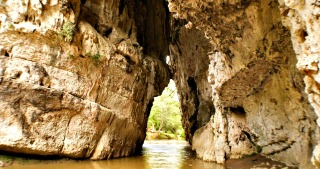
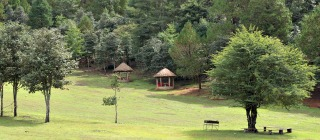
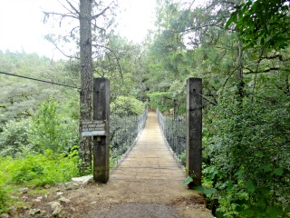
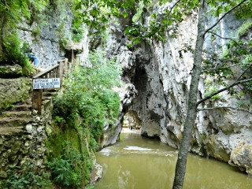
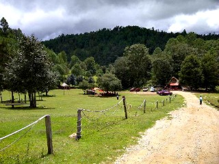

Este lugar se trata de un impresionante arco de piedra natural que se ha formado por más de cientos de años con formaciones geológicas como: estalactitas y estalagmitas
En su formación también influyeron las antiguas cuevas que quedaron al descubierto por efectos de la erosión y los derrumbes. En este hermoso lugar se pueden realizar diversas actividades como: tirolesa, descensos, paseo a caballo, caminatas por senderos y bicicletas de montaña.
Se encuentra ubicado a 9.2 km de la ciudad de San cristóbal de las casas con rumbo a Tenejapa
Saliendo de la ciudad de San Cristóbal de las Casas, exactamente del estacionamiento de la plaza de la paz, tomar la carretera San Cristóbal de las casa – Tenejapa.
Pasando por la calle Profa. María Adelina Flore seguida por la calle Nicolás Ruíz, girar a la izquierda hasta ir con dirección a la garita, siguiendo la carretera y girando levemente segun el sentido de está.
Antes de llegar a un paraje de las piedrecitas se toma un camino de terracería que los llevará directo al arcotete.
En el lugar, se pueden practicar todo tipo de actividades de esparcimiento como:
*Ir a balnearios,
*cuenta con baños/nadar,
*se pueden realizar caminatas/expediciones,
*cicloturismo,
*circuitos/expediciones,
*tomar fotografía,
*Juegos,
*observación de flora y fauna,
*paseos a caballo,
*ir de picnic;
Así como actividades deportivas: cabalgatas, futbol, rapel, senderismo, tenis, tiroleza, todo terreno entre otros.





posicione el mouse sobre las imágenes